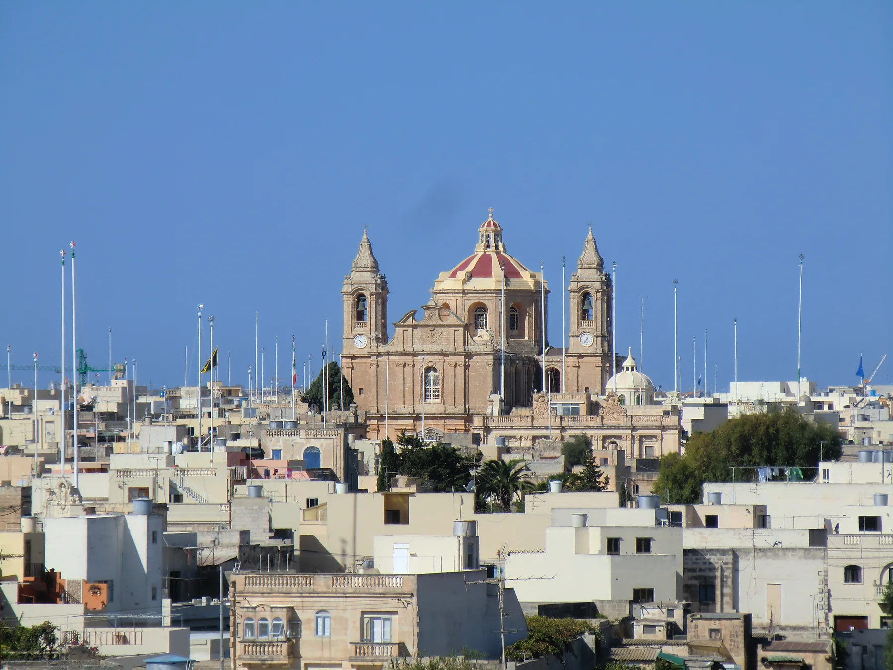

The lived-in centre and Santa Marija setting form one context. A church-centred image does not establish a landmark view from a home.

ĦAL GĦAXAQ · MALTAVillage core.
Village core.
Rural edge.
Ħal Għaxaq is mainly residential, but its lived-in core, Labour Avenue, Bir id-Deheb road context and outer agricultural lanes need four different readings.
ONE LOCALITY, DISTINCT SETTINGS
Start with the real street, not the village label.
The locality can orient a search, but it cannot promise that every address is quiet, beside fields or close to the parish square. Read the exact entrance and surrounding road before drawing conclusions.
The community clinic gives this road practical relevance. It does not prove that a particular listing is a short or step-free walk away.
Current licence records place everyday businesses on these roads. Check traffic, crossings and the actual building frontage in person.
Fields and rural lanes surround parts of the settlement. Never transfer that setting to an address without exact location evidence.
VIEWING REALITY
Fields, walls and roads can change the last 300 metres.
A broad map view is not a walking route. Agricultural boundaries, private lanes, traffic roads and pavement gaps all need an entrance-level check.
Begin at the real doorway
Check pavement, steps, crossings, deliveries and evening access at the building, not at a locality-centre marker.
Test the useful stop
Use the exact stop, direction and date. A nearby-looking stop can sit across a busy road or serve the opposite direction.
Name the neighbouring locality
Żejtun, Gudja, Santa Luċija, Marsaxlokk and Birżebbuġa remain separate. An edge address must not inherit another place's claims.
EVERYDAY ANCHORS
Three practical sources, then a live check.
These official sources establish civic, health and transport context. Current hours, eligibility, services, stops, departures and disruptions stay on the live pages.
Għaxaq Local Council
The council publishes resident services, notices, permits and locality information. Use the current site for office arrangements and collections.
Open the Local Council ↗Għaxaq Community Clinic
Primary HealthCare lists the clinic at 68 Labour Avenue. Confirm present services, clinic days, appointments and eligibility directly.
Open the current clinic directory ↗Live journey planning
Use Malta Public Transport for the exact stop, direction, date and service alert rather than relying on a frozen route number or frequency.
Plan with Malta Public Transport ↗ACTIVITIES WITH THEIR OWN ACCESS
Three heritage anchors, three separate checks.
These records establish place and history, not present opening, event, accessibility or entry conditions. Confirm current access before setting out.
Għaxaq Parish Church
The parish church is the village's recognisable civic landmark. A 2025 conservation-funding record does not establish current works or access restrictions.
Chapel of St Lucy
The national inventory records the chapel on Triq Ħal Tarxien and evidence from 1745. It does not promise that the interior is open.
Santu Kristu
The Restoration Directorate documents the nineteenth-century chapel and completed façade and parvis conservation. Check present access separately.
FOOD WITHOUT A “BEST OF” CLAIM
Snack-bar records, not restaurant recommendations.
The Malta Tourism Authority's exact GHAXAQ filter returned zero restaurant records and five snack-bar records when checked. These three examples are practical register anchors only; confirm current trading, menu, price, accessibility and opening directly.
7 to 29 Snack Bar
A verifiable snack-bar register entry, not a restaurant ranking or property-specific walking claim.
Dee's Snack Bar
The recorded address establishes locality context only. Check the current offer and operating details directly.
Workers Snack Bar
The same rule applies: name and address are recorded; quality, menu, hours and availability are not inferred.
Open the locality context only when you need it.
The map is a broad OpenStreetMap view centred on Ħal Għaxaq. It deliberately marks no listing, council boundary, route, distance, journey time, field access, ferry line or guaranteed view and loads only after your click.
Għaxaq Local Council · Address Registrar · Southern Region · Primary HealthCare clinics · Malta Public Transport · Churches and chapels · St Lucy inventory · Restoration Directorate · MTA snack-bar register. Volatile services, access, departures and operating details require a fresh check.
Ħal Għaxaq preview edition. No ranking, fixed opening hour, property pin, boundary, guaranteed view, rural setting, parking claim, accessibility promise, route, distance or journey time is implied.